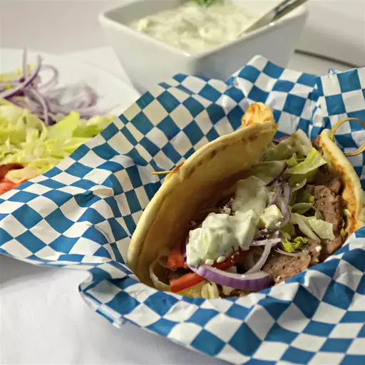

Gyros
Home

About gyros
Gyros, sometimes anglicized as a gyro (/ˈjɪəroʊ, ˈdʒɪər-, ˈdʒaɪr-/; Greek: γύρος, romanized:
yíros/gyros, lit. 'turn', pronounced [ˈʝiros]) in some regions, is meat cooked on a vertical rotisserie, then
sliced and served wrapped or stuffed in pita bread, along with other ingredients such as tomato, onion, fried
potatoes, and tzatziki.
In Greece, it is normally made with pork or sometimes with chicken, whilst beef and lamb are also used in other
countries.
Ingridients
- 453.59 g ground lamb
- 453.59 g ground beef , 80/20
- 1 onion , small
- 5 cloves garlic , minced
- 27 g breadcrumbs
- 3 g Dried oregano
- 4 g ground cumin
- 10 g kosher salt
- 2 g Aleppo pepper , or sub paprika and a dash of cayenne
- 1 g freshly ground black pepper
- 8 pieces Pita bread , warmed
- 1 cup Tzatziki sauce* , homemade or store-bought
- 3 campari or roma tomatoes , sliced
- 1 red onion , thinly sliced
- 1 romaine heart , finely chopped
- 0.5 cup feta cheese crumbles , optional
- Hot sauce , optional
Steps
- Make Gyro Meat (Bake in the morning or day before, if possible): Add onion and garlic to a food processor
and very finely chop. Add to a bowl along with the ground meat, salt, pepper, bread crumbs, oregano, cumin,
and Aleppo pepper. Use clean hands (or wear gloves if desired) to mix and mash the meat together really
well, so it holds together densely.
- Bake: Press meat mixture into a 9×5 inch loaf pan. Bake at 325 degrees F for about 50-60 minutes, or until
the center registers 165 degrees on a thermometer. Set aside to rest for 20 minutes, and then, ideally, if
time permits, refrigerate for a few hours or overnight. (Refrigeration will make the meat much easier to
slice.)
- Slice Meat: Remove meat from pan (reserve the fat drippings) and cut into thin strips, about ⅛ inch thick.
- Brown meat: Heat a griddle, cast iron or skillet over medium high heat. Add some of the meat drippings or a
little oil to lightly coat the bottom of the pan. Once hot, lay the meat slices flat in the hot pan and cook
for just 1-2 minutes on each side, until browned and crisp. (Alternately, you can lay the pieces flat on a
lined baking sheet and broil for a few minutes in the oven.)
- Assemble Gyros: Serve gyro meat in a warm pita, topped with tomato, onion, lettuce, tzatziki, and feta.